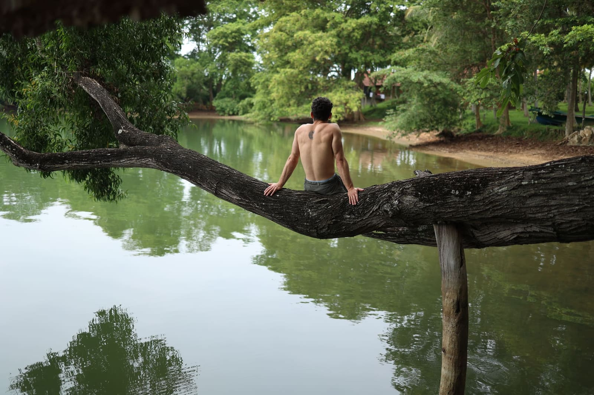
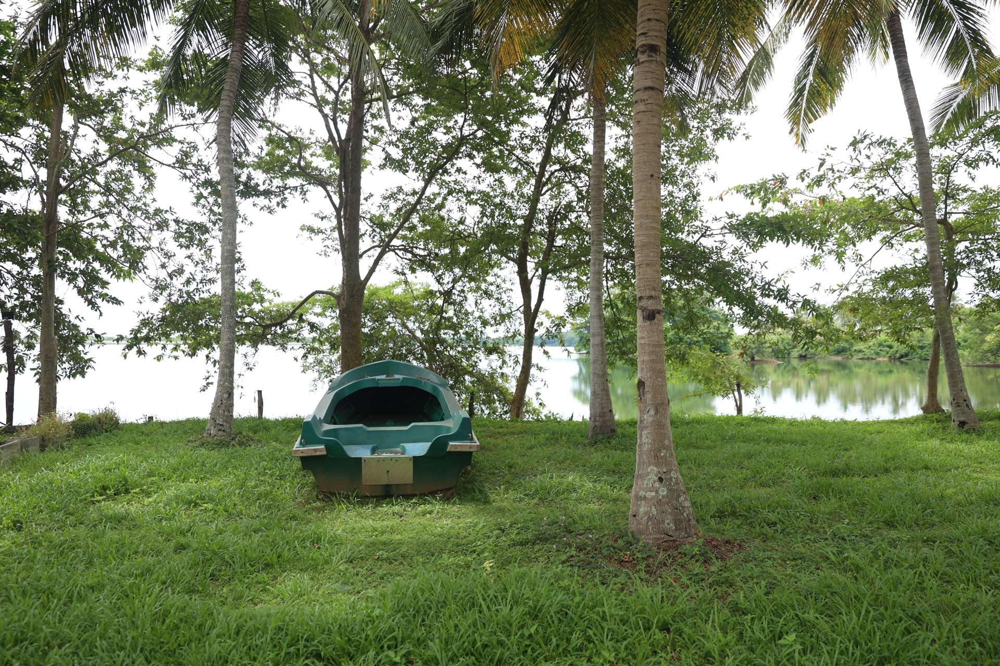
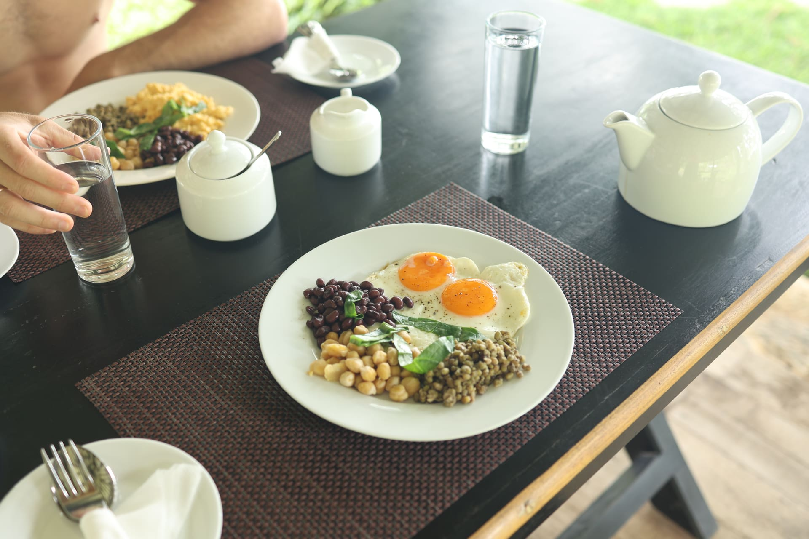

Embilipitiya · Sri Lanka
Embilipitiya · Sri Lanka
Aji started with papaya. Then pomegranate. By 2018 this was Sri Lanka's top-ranked commercial fruit farm. After 2020 the focus shifted — but the land stayed the same.
Today the orchard grows mango, coconut, banana, rambutan, star fruit, dragon fruit. Most of it is for the farm. Some of it lands on your breakfast table.




The orchard runs right to the water's edge. In the morning there's mist on the lake and the farm is quiet. At night there are fireflies.
Embilipitiya is not on the tourist trail. Udawalawe — elephant country — is 45 minutes south. Most guests combine the two.
Most people come for one night. Most stay longer.


Aji has kayaks on the lake. Take one out at dawn — the water is flat and the farm is still quiet.

Elephant country. Big herds, open grassland. The jeep picks you up here — Aji arranges it.

A nearby local horse farm offers riding experiences and hikes through the area. Ask Aji for details and to arrange a visit.


Breakfast is included. Every morning Aji's family puts out a spread — fresh fruit from the farm, eggs, tea.
If you ask the day before, they'll cook a proper Sri Lankan meal. Rice, curry, fresh fruit from the trees outside. All made here.
There's no restaurant nearby. You won't miss it.

No platform, no fees. Message Aji on WhatsApp — he replies fast.
+94 70 506 5061